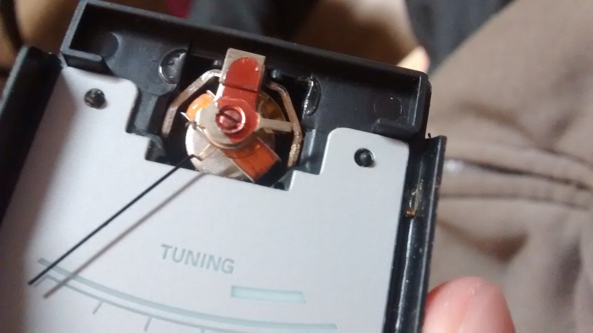
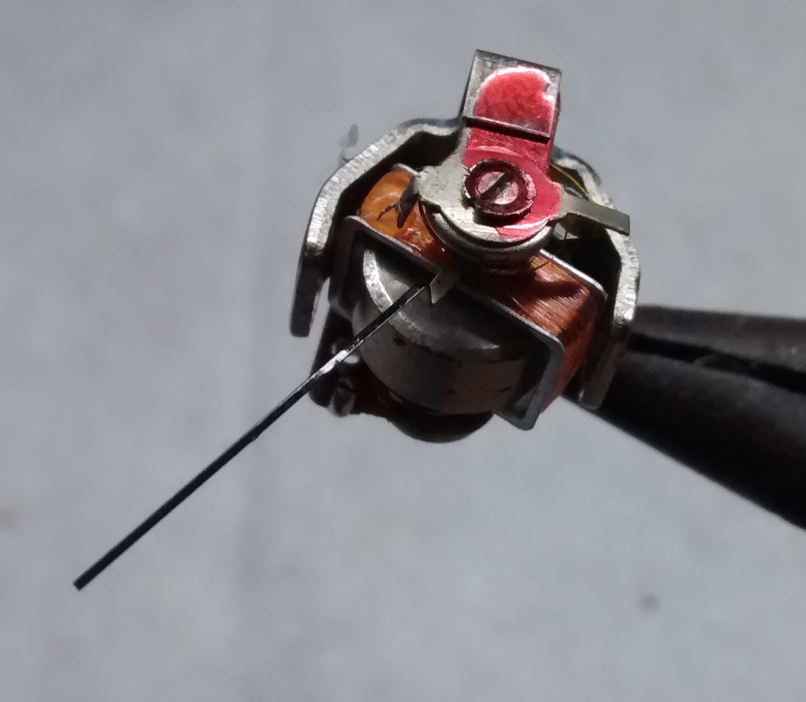
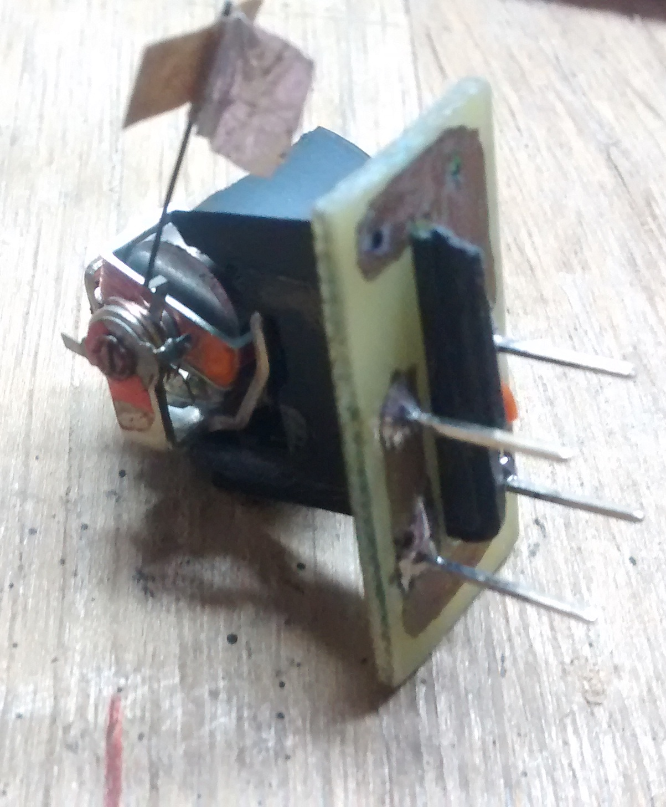

So some time ago I took up this project of building one of those galvanometer-based precision scales. As it turns out, it's not hard to build a device capable of measuring masses in the sub mg range, and even precisions on the order of the single μgs should be possible. For reference, a cup of coffee contains about 100 mg of caffeine and a grain of rice (dry) weighs about 25 mg; that mosquito over there weighed in at 5.9 mg, and a single square mm piece of paper should weigh 75 μg.
The design is well-known on the Internet, and has been demonstrated a bunch of times before; it seems it traces back to a 1996 Scientific American article, where it is credited to a G. Schmermund. The idea is to use a galvanometer for a load cell: the galvanometer is placed "sideways", so that the plane of rotation of the pointer is parallel to gravity. A bias current runs through the coil to set the pointer at its unloaded rest position, and the sample is placed at the tip of the pointer.
The average galvanometer as found in an analog multimeter or indeed any panel meter turns out to be quite the precise electromechanical transducer, and the deflection of the pointer should be proportional to the sample weight—so measure the deflection, measure the weight. Alternatively, we can try and return the pointer to its original position by increasing the current through the coil, and deduce the weight by looking at the required current increase. One advantage of this approach is increased linearity: the deflection is actually proportional to the torque, which is proportional to the weight only in the limit of small deflections.
|  |
|
 |

|

|

|
 |
This was how Schmermund's own scale worked, and at this point he was already talking single μgs. He adjusted the position of the pointer by eye, but there's no reason not to use an electronic sensor; the popular choice here is the slotted optical switch. On the pointer tip we place a piece of opaque material, parallel to the plane of rotation, to act as a shutter, going into the slot and interrupting the beam if the pointer hangs too low. The beams in these devices are usually around a mm thick, often less than that. Even moreso, within this mm the photocurrent varies relatively linearly, and so we can adjust the position of the pointer really finely.
Making this shutter (and tray) was a major headache at first. For one example, restricting ourselves to the full-scale deflection current ≈ 0.5 mA, the galvanometer could raise less than 20 mg; with a single square cm piece of paper already weighing in at 7.5 mg, this was quite a restriction. We went through several designs until we found some styrofoam here which ended up being the perfect material. It was surprisingly light at 25 μg / mm3, easy to machine, and very sturdy (when compared to materials like paper and Al foil, of course).
Another possible improvement then is automating the current adjustment process, so that the scale works entirely on its own. The simplest way to do this is with a negative feedback loop: if the pointer is lowered, the output of the switch decreases, and we make it so that this causes an increase in the coil current, so that the pointer is raised. Of course, there's a little more to it than that; in the video above for example, we see that if the system responds too strongly to pointer deflections (we have an op amp in open loop there), we get some oscillation instead of convergence to equilibrium. Nonetheless, with this strategy alone we already manage to get a precision on the order of 10 μg. It turned out not to be that hard to find appropriate levels of feedback; empirically the best (not too jumpy, not too leisurely) values were β ≈ 0.5 (icoil/iphoto), but even in varying this by an order of magnitude the system remained quite stable.
In the image below for example we see how the switch output typically responds to a disturbance. And in the video (taken on a different occasion) we see the scale in action; here we are weighing a roughly 4 mm2 ≈ 300 μg piece of paper. On the screen we see the coil current.

More precision requires more work though. This rudimentary control system for example seems to increase the susceptibility of the system to noise like wind currents: the switch output is noisier than when compared to a system driven by a constant (uncontrolled) current on the coil. I played around with filters and the like but wasn't able to consistently reduce the noise, so I figured we'd have to be a little more quantitative. I carried out a bunch of measurements of system parameters first of all, so that we'd know what we were dealing with, but didn't get around to putting everything together (yet).
Anyway… For calibration of the scale, we used small pieces of paper of known gramature as reference weights. Paper was taken from different sources to combat any possible bias in our references. Here are some results.
(μg / μA) ---------------------- 39.780 38.522 37.076 36.088 36.088 37.190 36.514 36.088 37.773 34.705 37.336 36.244 40.394 37.326 35.422 40.456 37.606 ---------------------- Avg: 37.3 Std dev: 1.7
This value proved to be reasonably constant over our experiments (and corroborated by other indirect measurements we made later). With this figure in our hands we could go on and weigh other objects—though to be sure, we did intersperse the weighing of unknown weights with reweighing of known weights. Here are some honorable mentions.
| Eyelash | 40 μg |
| Fruit fly | 450 μg |
| Sesame seed | 3.6 mg |
| Mosquito (big) | 5.9 mg |
Really weighing the eyelash was a little beyond the limits of the scale I'd say. The noise in the circuit amounted to a little over 5 μg, which represented a significant proportion of its weight. Still, repeated measurements yielded values between 35–45 μg.
About the fruit flies. We wanted to weigh them alive. We caught a bunch of them, and succeeded in immobilizing them by chilling them; this is done by placing them in the freezer for about a minute (up to two minutes for some individuals). After removing them from the freezer, they remain in this dormant state for about 30 seconds before waking up. But they can be kept dormant for several minutes (without killing them) by placing them on a chilled (~ 0 °C) surface, like a block of ice covered by a paper towel.
However, we got a couple of them killed at some point (on an accident unrelated to the chilling) and so we weighed those instead, and set the other free. I think it was less than a day between them dying and us weighing them, so I'm not sure to what extent they were dry when we weighed them. In any case, the masses we found differed somewhat from the figures we found online: 300 μg for a dry fly, and 1.0 mg for a not-dry one. On the other hand, the flies we did weigh seemed to be small ones (2.0 mm from head to butt; some other fruit flies we found were almost twice that).
Although we didn't manage to weigh the flies alive, we did get some cool footage of them. Here's one of them waking up after being chilled.
It was really interesting to weigh these small objects. I'd have brushed them all off as weighing "very little", but it really puts things in perspective to see how there's, roughly, 10 eyelashes in a fruit fly, 10 fruit flies in a mosquito, and 10 mosquitos in a water drop. Another object that would be interesting to weigh would be a feather.